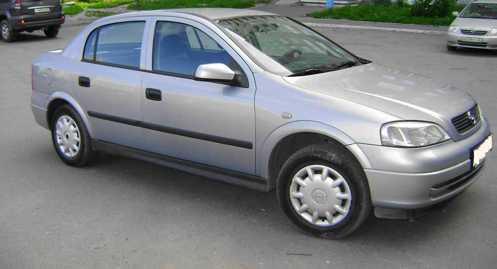

Opel Astra G 1.4 2001
| Ár, költségek | |
| Vételár: | 590 000 Ft |
| Általános adatok | |
| Évjárat: | 2001/10 |
| Állapot: | Megkímélt |
| Kivitel: | Ferdehátú |
| Jármű adatok | |
| Kilométeróra állása: | 244 081 km |
| Szállítható szem. száma: | 5 fő |
| Ajtók száma: | 5 |
| Szín: | Szürke |
| Saját tömeg: | 1163 kg |
| Teljes tömeg: | 1640 kg |
| Csomagtartó: | 370 liter |
| Klíma fajtája: | Maniális klíma |
| Motor adatok | |
| Üzemanyag: | Benzin |
| Hengerűrtartalom: | 1388 ccm |
| Teljesítmény: | 66 kW, 90 LE |
| Henger-elrendezés: | Soros |
| Hajtás | Első kerék |
| Sebességváltó fajtája: | Manuális (5 fokozatú) sebességváltó |
| Okmányok | |
| Okmányok jellege: | Érvényes magyar okmányok |
| Műszaki vizsga érvényes: | 2019/5 |
Jó állapotú benzines G astra, magyarországról. Második tulajdonostól, rendszeres karabantartással, elektromos ablakok, klíma és jó műszaki állapot. Kisebb nagyobb javításokra szorul a karosszéria. Beszámítás is lehetséges. További információkért kérem keressen a 06201234567 telefonszámon!